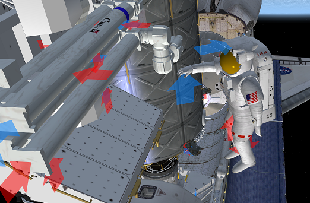

ISS v3.2 EVAの基本とAPFRの使い方
ISS v3.2における一部のISS組み立てミッションでは、現実のそれと同様に、宇宙飛行士によるEVAが必要になります。
今回は、EVAの基本とAPFRの使い方を解説します。
EVAの基本
重要：ISS v3.2では、UMMUではなく専用のEMU（ロシア側モジュールではOrlan）を使ってEVAをおこないます。
F3キーを押して、ShuttleBay（スペースシャトル貨物ベイ）を選択。
キーボードでJを押すと、宇宙飛行士（EMU）がエアロックから出てくる。
宇宙飛行士を操作する
操作方法は普通の宇宙船のRCSと同じ。
前後左右上下に自由に飛行することができる。（宇宙船の手すりなどは利用できません）
キーボード1・2・3・4・5・6・7・8と矢印キーを使って、手と体の向きを変えることができる。
キーボードでSを押すと、右手と左手を切り替えることができる。
Qを押すと、手になにかを持つことができる。
キーボードでHomeキーを押すか、あらかじめRMSダイアログのShow grapple pointsにチェックを入れると、接続可能なポイントが矢印で表示される。
EMUの手は青い矢印だが、オブジェクトの赤い矢印に接近してQを押すとつかむことができる。
手から離したい場合は、もう一度Qを押す。

Ctrl+Vでバイザーを開いて宇宙飛行士の顔を見ることもできます。
ISSのエアロックを使用する
ISSにQuestもしくはPirsモジュールが導入されて以降のミッションでは、ISSのエアロックも利用可能になる。
Shift+Cでエアロックを選択。
Shift+Oでエアロックを開放。
JでEVAを開始する。
ロボットアーム&APFRを使ったEVA
APFR（宇宙飛行士をロボットアーム先端に固定する足場）を使うと、アームを使って移動することができるようになります。
ISSかスペースシャトルにAPFRが取り付けられているので、宇宙飛行士（EMU）を使ってロボットアームまで運ぶ。
ロボットアームの先端で、Qを押して手から離す。
RMSダイアログを使って、アームの先端にAPFRを固定する。
Shuttle Fleet ロボットアーム(RMS)の操作
重要：接続位置がおかしい場合は、いったんゲームを終了させて、Current stateから再開してください。
EMUの足元をAPFRに接近させる。
F3キーを押して、APFRを選択。
キーボード1・2・3・4・5・6を押すと、APFRの向きを変えることができる。
Qを押すと、EMUが接続される。
何かをつかむ場合は、F3を押してEMUに切り換えてからQを押す。
接続が不安定になるとき
D3D9Clientで接続が不安定になる場合は、LaunchpadのVideoタブのDisable vertical syncのチェックを外してみてください。